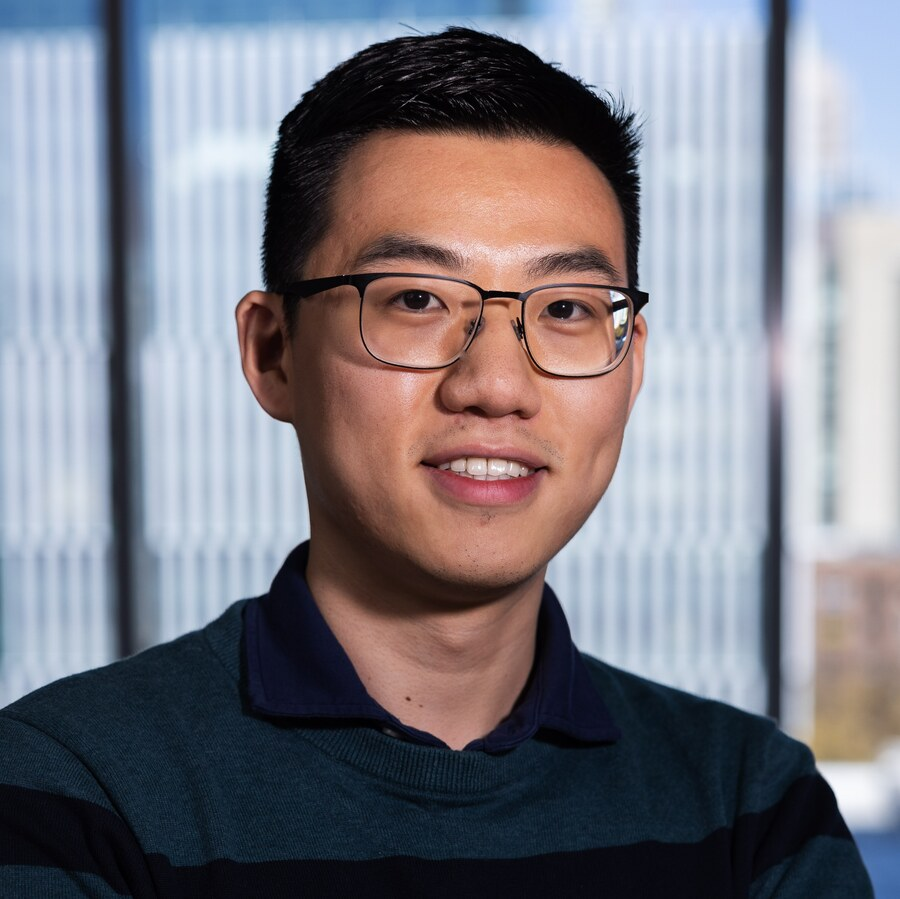
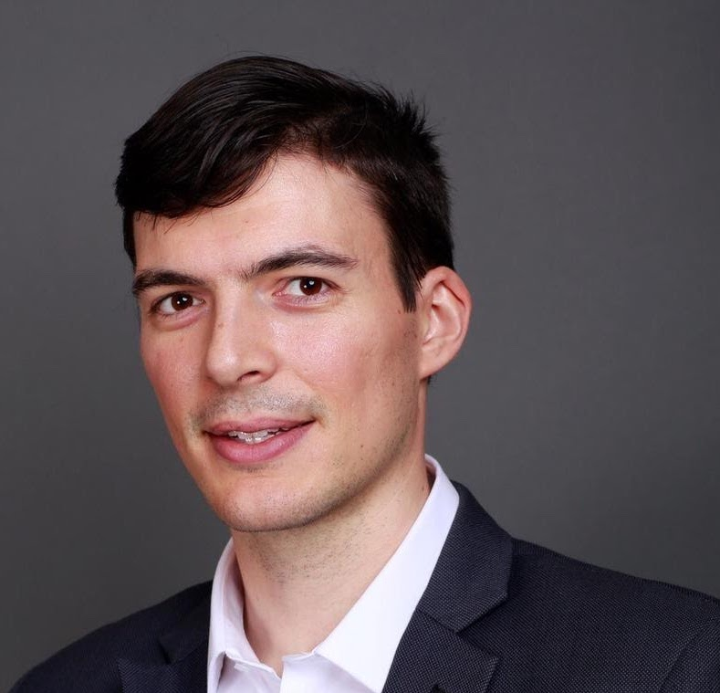
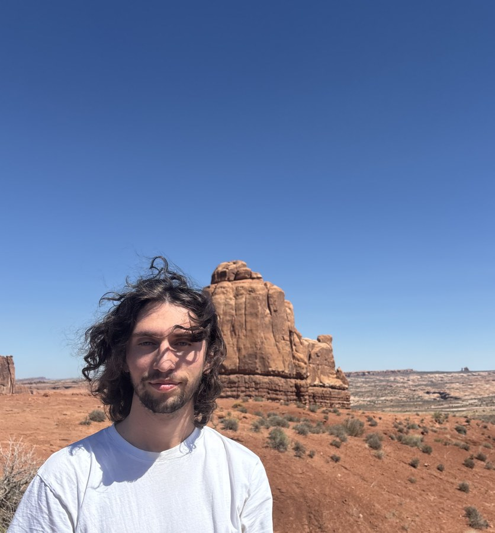

The fourth student-focused scientific machine learning (SciML) symposium at Georgia Tech is dedicated to the development and applications of SciML methodologies led by current students in a wide array of applications such as tropical cyclone and flood prediction, spectroscopy, non-Newtonian fluid rheology, satellite control, and financial volatility forecasting, to name a few. The primary goal of this symposium is to showcase student talents and contributions through the invited and contributed talks. Although this symposium is student-focused, everyone is welcome to attend irrespective of their student status. This event originated from the graduate Special Topics Course on SciML at Georgia Tech. In compliance with FERPA, only the group names (rather than the author names) will be provided in the schedule for the projects that were conducted by the students of the course.
Code of Conduct:
The organizational staff of the symposium is committed to providing a positive symposium experience for all attendees, regardless of gender, gender identity and expression, sexual orientation, disability, physical appearance, body size, race, age, religion, or national and ethnic origin. We encourage respectful and considerate interactions between attendees and do not tolerate harassment of symposium participants in any form. Symposium participants violating these standards may be sanctioned or expelled from the symposium at the discretion of the symposium organizers.
Smooth Operators: Physics-Informed Neural Networks for the Electric Field of Graphene Nanowrinkles
8:15-8:30 AM
Group 7: Physics-Informed Pretraining and Patient-Specific Fine-Tuning for Glioblastoma Cell-Density Maps
8:30-8:45 AM
Team MAMA: Physics-Informed Neural Control of Satellite Trajectories with Learned Lyapunov Certificates
8:45-9:00 AM
Group 5: Physics-Informed Neural Operators for Extreme Flood Prediction with the 2D Shallow-Water Equations
9:00-9:15 AM
Tech Street: Scientific-Model-Informed Transformer for Intraday Realized Variance Forecasting for Stocks
Guest Speakers

Xiangming (Max) Huang (he/him) is a third-year PhD student in Machine Learning at Georgia Tech, advised by Dr. Raphaël Pestourie. He completed his B.S. in Mathematics at Texas A&M University and his M.S. in Data Science at Columbia University. His research focuses on dimensionality reduction and representation learning to accelerate large-scale PDE-constrained optimization.
Organizers

Dr. Raphaël Pestourie (he/him) is an Assistant Professor in Scientific Machine Learning at the School of Computational Science and Engineering, Georgia Tech. He was a Postdoctoral Associate at MIT before joining GaTech, and earned his PhD in Applied Mathematics from Harvard University.
He leads a research group with the goal to extend the horizon of accurate models for the optimization of engineering solutions. For example, introducing models where trial and error and heuristics are the state of the art for practitioners. His group develops fast approximate PDE models and scientific machine learning models that combine AI models and scientific models, end to end. These new models enable the ressource-efficient and large-scale optimization of engineering solutions in the following areas:
Multifidelity, multiscale, and multiphysics problems simulation.
Scientific machine learning for optimization.
Metamaterials design.

Antonio Varagnolo (he/him) is a 2nd year PhD student in Computational Science and Engineering, working in the group of Professor Pestourie. He is interested in AI methods to accelerate scientific discovery and engineering design tasks, with particular focus on AI-enhanced optimization constrained by differential equations. He is an applied ML fellow at Los Alamos National Laboratory and a Trainee in the SUSMED NSF program.